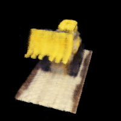
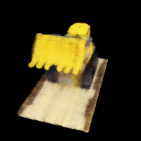
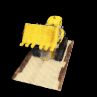
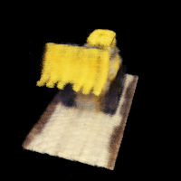
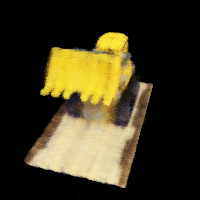
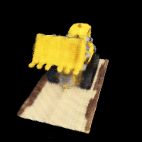

Yueheng Zeng @ Final Project
This project is a fun exploration of the neural field and neural radiance field. In the first part, we fit a neural field to a 2D image. In the second part, we fit a neural radiance field to a 3D scene.
Rendered Images and Depths of the 3D Scene with Neural Radiance Field
In this part, we implement and train a neural field to represent a 2D image. More mathematically, we are trying to fit a neural field that: \[ F: \{x, y\} \rightarrow \{r, g, b\} \] where \(x, y\) are the coordinates of the image and \(r, g, b\) are the RGB values of the image.
We implement the sinusoidal positional encoding for 2D images. The positional encoding is defined as: \[ PE(x) = \{x, sin(2^0\pi x), cos(2^0\pi x), sin(2^1\pi x), cos(2^1\pi x), ..., sin(2^{L-1}\pi x), cos(2^{L-1}\pi x)\} \] where \(L\) is highest frequency and \(x\) is the input coordinate. For example, if \(L = 10\), the positional encoding for a \(2\) dimensional input is of size \(2 \times 2 \times L + 2 = 42\).
We implement a neural field model for 2D images. The neural field model is defined as:
Neural Field Model Architecture
More specifically, the parameter \(L\) is set to \(10\) and the other parameters are set to the same values as in the plot shown above.
We train the neural field model using the Adam optimizer with a learning rate of \(0.01\). The loss function is the mean squared error. The model is trained for \(1000\) iterations with a batch size of \(10000\).

The Original Images Used for Training
The PSNR of the Original Images
The Reconstructed Images of the First Image During Training
The Reconstructed Images of the Second Image During Training
We perform hyperparameter tuning on the neural field model. The hyperparameters we tune are the the highest frequency \(L\) and the number of layers in the neural field model. We turn the highest frequency \(L\) in \([6, 8, 10, 12, 14]\) and the number of layers in \([2, 4, 6, 8, 10]\). The best hyperparameters are still \(L = 10\) and the number of layers is \(4\) and other configurations of hyperparameters either do not differ much from the best hyperparameters or perform worse.
For the first image:
L=6: PSNR = 22.52
L=8: PSNR = 23.06
L=10: PSNR = 23.10 # Default
L=12: PSNR = 16.85
L=14: PSNR = 10.46
num_layers=2: PSNR = 22.53
num_layers=4: PSNR = 23.05 # Default
num_layers=6: PSNR = 21.63
num_layers=8: PSNR = 22.54
num_layers=10: PSNR = 21.68
For the second image:
L=6: PSNR = 18.96
L=8: PSNR = 19.61
L=10: PSNR = 19.08 # Default
L=12: PSNR = 17.36
L=14: PSNR = 17.20
num_layers=2: PSNR = 18.36
num_layers=4: PSNR = 19.23 # Default
num_layers=6: PSNR = 17.43
num_layers=8: PSNR = 18.46
num_layers=10: PSNR = 18.90
In this part, we implement and train a neural radiance field to represent a 3D scene. More mathematically, we are trying to fit a neural radiance field that: \[ F: \{x, r\} \rightarrow \{r, g, b, \sigma\} \] where \(x\) is the 3D coordinate of the scene, \(r\) is the ray direction, and \(r, g, b\) are the RGB values and \(\sigma\) is the density.
We first need to transform a point from camera to the world space. This is implemented in the function transform. This function transforms points from camera coordinates to world coordinates by applying a camera-to-world transformation matrix.
We then implement another function pixel_to_camera that transform a point from the pixel coordinate system back to the camera coordinate system using the camera intrinsic matrix.
We then implement the function pixel_to_ray that computes ray origins and directions from pixel coordinates by first mapping the pixel coordinates to camera coordinates using the camera's intrinsic matrix. These camera coordinates are then transformed to world coordinates using the camera-to-world transformation matrix. The ray origins are set as the camera's position in the world space, while the ray directions are computed as vectors pointing from the camera position to the transformed points in the world space.
We first need to implement the data loading class RaysData that samples rays from images. It prepares a grid of UV coordinates, offset by 0.5 to account for the pixel center, and computes ray origins and directions using the camera intrinsics and extrinsics.
We then implement the function sample_along_rays that discretizes each ray into a fixed number of points between near and far bounds. To improve coverage and prevent overfitting, we need to introduce random perturbations to the sampling locations during training. This combination of uniformly spaced and perturbed sampling ensures diverse and robust coverage of the 3D scene for the subsequent NeRF training.
Sampled Rays from the 3D Scene
We implement the neural radiance field model. The neural radiance field model is defined as:

Neural Radiance Field Model Architecture
More specifically, the highest frequency for positional encoding of the 3D coordinates is set to \(10\) and the highest frequency for positional encoding of the ray directions is set to \(4\). The other parameters are set to the same values as in the plot shown above.
To render the 3D scene, we implemented function volrend that computes the discrete approximation of the volume rendering equation, which is defined as: \[ \hat{C}(\mathbf{r})=\sum_{i=1}^N T_i\left(1-\exp \left(-\sigma_i \delta_i\right)\right) \mathbf{c}_i, \text { where } T_i=\exp \left(-\sum_{j=1}^{i-1} \sigma_j \delta_j\right) \] where \(c_i\) is the color of the \(i\)th sample and \(T_i\) is the probability of a ray not terminating before sample location \(i\).
With this function, we can then train the neural radiance field model using the Adam optimizer with a learning rate of \(0.0005\). The loss function is the mean squared error of the real pixel values and the rendered pixel values. The model is trained for \(1500\) iterations with a batch size of \(10000\).
The Rendered Images of First View in the Validation Dataset during Training
 





The Rendered Images of Second View in the Validation Dataset during Training
The PSNR of the Validation Views during Training (All \(> 23\) after 1500 iterations)
With the trained neural radiance field model, we can render the 3D scene on the test dataset.
A Spherical Rendering using the Provided Cameras Extrinsics in the Test Dataset
We can modify the volume rendering process to compute a depth map by replacing the rgb values with the depth of points along the ray in the volume rendering equation.
Rendered Depths of the 3D Scene with Neural Radiance Field